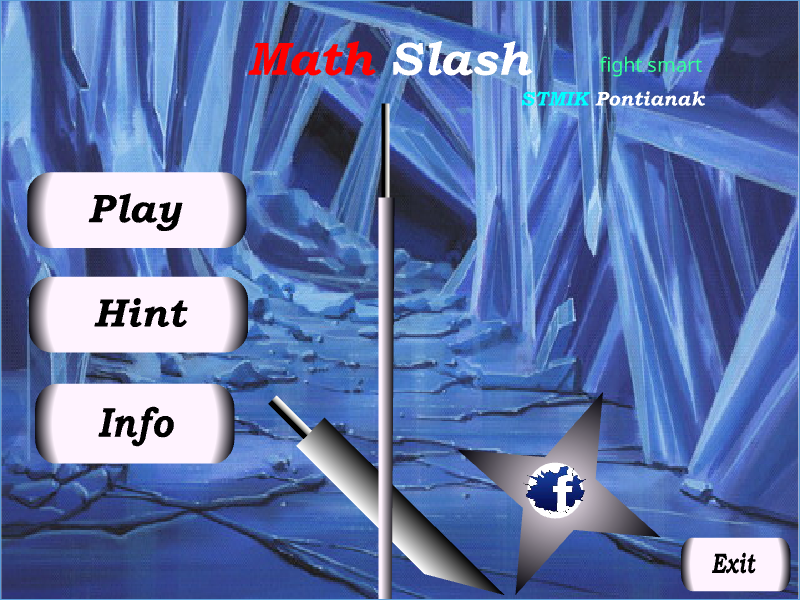
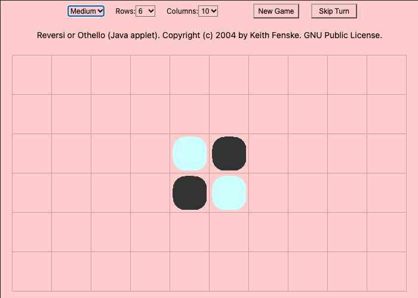

web-revive demos
Give your agent the power to bring dead Flash and Java web games back to life, so they run in any modern browser again. No Flash Player, no Java plugin: these run on Ruffle and CheerpJ.
Get it on GitHub Use it with your agent
Math Slash Flash, ActionScript 2
An arithmetic slashing game made in Flash. Click Play. Revived from the original .swf with no changes.
Play in your browser
Reversi Java 1.1 applet
Othello against the computer, a Java applet from 2004. Click a square to move. Give it a few seconds to load the Java runtime.
Play in your browser